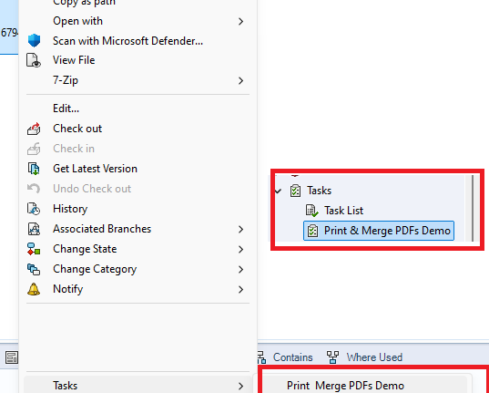

| I'm getting some errors related to the bill of materials layout. |
In recent versions, we have started using the PDM BOM instead of the SOLIDWORKS BOM. PDMPublisher will leverage the first BOM layout in your vault to calculate quantities. The layout must include a (Quantity) column and a (Configuration name) column. |
| How does PDMPublisher calculate the BOM quantities? |
PDMPublisher creates a Bill of Materials in memory from the top-level assembly. It ignores all suppressed, virtual, envelope, and components that are excluded from the Bill of Materials. Most of these settings come from the component properties dialog. |
| How do the conditions work? |
Conditions are evaluated for the found PDM reference. If any of the conditions evaluate to true, the reference is added to the processing queue. |
| I cannot see the exported files! |
Make sure the export location in some where in your vault (or outside your vault) where you have the workflow and folder permissions to add and edit files. The vault's root folder is typically a folder that is locked for adding or editing files by PDM administrators. |
| I have created a task. How can I launch it? |
PDMPublisher tasks can be attached to a workflow transition or triggered from the right-click menu on a file. You will find your created tasks under Tasks. In the right-click menu, tasks use the name defined the task setup page. See below:  |